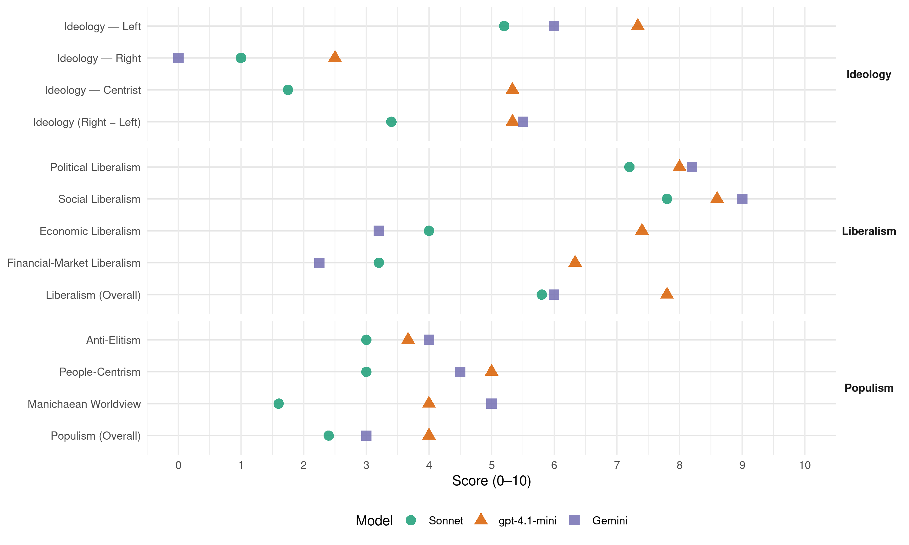

AGALEV (Belgium, 1999)
manifesto_id 21112_199906
Get full text: This site shows derived annotations and short verbatim quotes only. The full manifesto text is © Manifesto Project / WZB — obtain it via manifesto-project.wzb.eu using the manifesto_id above.
Headline scores
| Dimension | Sonnet | gpt-4.1-mini | Gemini |
|---|---|---|---|
| Populism (Overall) | 2.4 | 4.0 | 3.0 |
| Anti-Elitism | 3.0 | 3.7 | 4.0 |
| People-Centrism | 3.0 | 5.0 | 4.5 |
| Manichaean Worldview | 1.6 | 4.0 | 5.0 |
| Ideology (Right − Left) | 3.4 | 5.3 | 5.5 |
| Liberalism (Overall) | 5.8 | 7.8 | 6.0 |
| Political Liberalism | 7.2 | 8.0 | 8.2 |
| Social Liberalism | 7.8 | 8.6 | 9.0 |
| Economic Liberalism | 4.0 | 7.4 | 3.2 |
| Financial-Market Liberalism | 3.2 | 6.3 | 2.2 |
Evidence per dimension
Economic Liberalism
Gemini · score 4.0 · verified · chunk 1
“overheid die economie en ecologie verzoent”
Meer fundamenteel is Agalev voorstander van een overheid die economie en ecologie verzoent. Duurzaam produceren en consumeren wordt zo de meest logische keuze.
Gemini · score 3.0 · verified · chunk 2
“Geen onbezonnen deregulering dus, wel een gerichte herregulering”
Agalev pleit ondubbelzinnig voor een sterkere rol van de politiek. Enkel op die voorwaarde kan ze de nodige sociale en ecologische randvoorwaarden afdwingen. Wat niet wil zeggen dat de Groenen pleiten voor de terugkeer naar allesomvattende sterke staten. Agalev wil in de eerste plaats betere politieke spelregels. Geen onbezonnen deregulering dus, wel een gerichte herregulering.
Gemini · score 3.0 · verified · chunk 3
“Verdere privatisering, afstoting, verzelfstandiging van infrastructuur”
713 – Verdere privatisering, afstoting, verzelfstandiging van infrastructuur en exploitatie van openbaar vervoer vermijden.
Gemini · score 3.0 · verified · chunk 4
“een vaste boekenprijs”
Agalev is principieel voorstander van een vaste boekenprijs. De mogelijkheid daartoe wordt Europees geregeld.
Gemini · score 3.0 · verified · chunk 5
“plooien naar de liberaal-economische principes”
feiten neer op een zich plooien naar de liberaal-economische principes die overheersen in het IMF
gpt-4.1-mini · score 8.0 · verified · chunk 1
“Een lastenverschuiving van arbeid naar milieugebruik dringend gewenst is.”
Iedereen weet dat een lastenverschuiving van arbeid naar milieugebruik dringend gewenst is. Alleen: de politieke wil ontbreekt om er ook écht voor te gaan.
gpt-4.1-mini · score 7.0 · verified · chunk 2
“Agalev pleit voor een diepgaande bijsturing van de werking en de regels van die WTO”
Agalev is voorstander van een diepgaande bijsturing van de werking en de regels van die WTO, anders is er geen sociaal en ecologisch eerlijke wereldhandel mogelijk. Op het vlak van de investeringen stelt zich hetzelfde probleem. De voorbije jaren is het pakket aan buitenlandse directe investeringen immens toegenomen en uitgegroeid tot de belangrijkste financiële stroom tussen landen.
gpt-4.1-mini · score 8.0 · verified · chunk 3
“Het macro-economisch beleid vanuit de groene doelstellingen bijsturen. Zowel de begroting als de belastingen op productie en consumptie worden vanuit die benadering aangepast”
201 – Het macro-economisch beleid vanuit de groene doelstellingen bijsturen. Zowel de begroting als de belastingen op productie en consumptie worden vanuit die benadering aangepast. Zo ontstaat er een systeem van stabiele en rechtvaardige heffingen, die mee de ombouw naar duurzame ontwikkeling ondersteunen.
gpt-4.1-mini · score 7.0 · verified · chunk 4
“personenbelasting wordt een (beperkt) concurrerende belasting”
Wat betreft fiscaliteit blijven de BTW en de vennootschapsbelasting een federale bevoegdheid. De personenbelasting wordt een (beperkt) concurrerende belasting. De gewesten kunnen na federale afspraak een deel zelf innen. [B]
gpt-4.1-mini · score 7.0 · verified · chunk 5
“Structurele aanpassingsprogramma’s Door de structurele aanpassingsprogramma’s wordt van landen in de Derde Wereld verwacht dat ze eerst een structurele aanpassing doorvoeren eer ze in aanmerking komen voor bijvoorbeeld nieuwe leningen”
–Structurele aanpassingsprogramma’s Door de structurele aanpassingsprogramma’s wordt van landen in de Derde Wereld verwacht dat ze eerst een structurele aanpassing doorvoeren eer ze in aanmerking komen voor bijvoorbeeld nieuwe leningen. Die structurele aanpassing komt in de feiten neer op een zich plooien naar de liberaal-economische principes die overheersen in het IMF en de Wereldbank. Van landen wordt dan onder meer verwacht dat ze de overheidsuitgaven (in bijvoorbeeld de sociale sectoren) drukken.
Sonnet · score 4.0 · verified · chunk 1
“geen onbezonnen deregulering dus, wel een gerichte herregulering”
Agalev wil in de eerste plaats betere politieke spelregels. Geen onbezonnen deregulering dus, wel een gerichte herregulering
Sonnet · score 4.0 · verified · chunk 2
“Geen onbezonnen deregulering dus, wel een gerichte herregulering”
Agalev wil in de eerste plaats betere politieke spelregels. Geen onbezonnen deregulering dus, wel een gerichte herregulering.
Sonnet · score 4.0 · mixed · chunk 3
“nominaal tarief van de vennootschapsbelasting verlagen”
206 – Het nominaal tarief* van de vennootschapsbelasting verlagen, maar deze operatie koppelen aan een bredere belastbare basis, zodat de vennootschappen in globo niet minder belastingen betalen.
Sonnet · score 5.0 · mixed · chunk 4
“BTW en de vennootschapsbelasting een federale bevoegdheid”
Wat betreft fiscaliteit blijven de BTW en de vennootschapsbelasting een federale bevoegdheid. De personenbelasting wordt een (beperkt) concurrerende belasting.
Sonnet · score 4.0 · verified · chunk 5
“liberaal-economische principes die overheersen”
neer op een zich plooien naar de liberaal-economische principes die overheersen in het IMF en de Wereldbank. Van landen wordt dan onder meer verwacht dat ze de overheidsuitgaven drukken.
Financial-Market Liberalism
Gemini · score 2.0 · verified · chunk 2
“diepgaande hervorming van de internationale financiële sector echt nodig”
Voorstellen om te komen tot een Multilateraal Investeringsakkoord (MAI) voorspellen weinig goeds. Tenslotte is een diepgaande hervorming van de internationale financiële sector echt nodig. De manier waarop IMF en Wereldbank nu werken, heeft al te vaak weinig of niets te maken met duurzame ontwikkeling, integendeel.
Gemini · score 2.0 · verified · chunk 3
“belasting op financiële meerwaarden invoeren”
bankgeheim op gemotiveerde aanvraag mogelijk maken. Een progressieve vermogensbelasting, een heffing op inkomsten uit vermogen en een belasting op financiële meerwaarden invoeren. Vermogens tot 15 miljoen frank
Gemini · score 2.0 · verified · chunk 4
“belasting op internationale financiële transacties”
Een belasting op internationale financiële transacties, een zogenaamde Tobin-taks*, invoeren.
Gemini · score 3.0 · verified · chunk 5
“belasting op de internationale geldbewegingen”
Tobin-taks Een belasting op de internationale geldbewegingen, genoemd naar de ontwerper
gpt-4.1-mini · score 6.0 · verified · chunk 2
“Een diepgaande hervorming van de internationale financiële sector echt nodig”
Tenslotte is een diepgaande hervorming van de internationale financiële sector echt nodig. De manier waarop IMF en Wereldbank nu werken, heeft al te vaak weinig of niets te maken met duurzame ontwikkeling, integendeel. Een voorbeeld daarvan zijn de structurele aanpassingsprogramma’s die landen in het Zuiden dwingen in het keurslijf van liberalisering en privatisering.
gpt-4.1-mini · score 7.0 · verified · chunk 3
“Een progressieve vermogensbelasting, een heffing op inkomsten uit vermogen en een belasting op financiële meerwaarden invoeren”
507 – De vermogens en de inkomsten uit vermogen op een meer billijke wijze laten bijdragen aan de fiscaliteit en aan de sociale zekerheid. Onze groene voorstellen om dit te realiseren: een vermogenskadaster laten aanleggen. de opheffing van het bankgeheim op gemotiveerde aanvraag mogelijk maken. Een progressieve vermogensbelasting, een heffing op inkomsten uit vermogen en een belasting op financiële meerwaarden invoeren.
gpt-4.1-mini · score 6.0 · verified · chunk 4
“belasting op internationale financiële transacties, een zogenaamde Tobin-taks”
Een belasting op internationale financiële transacties, een zogenaamde Tobin-taks, invoeren. Daarnaast wordt een meldingsplicht voor financiële activiteiten van ondernemingen ingesteld. [EUR, B]
Sonnet · score 3.0 · verified · chunk 1
“heffing op de inkomsten uit vermogens”
een algemene sociale bijdrage, een heffing op de inkomsten uit vermogens en een CO2-energieheffing
Sonnet · score 3.0 · verified · chunk 2
“hervorming van de internationale financiële sector”
Tenslotte is een diepgaande hervorming van de internationale financiële sector echt nodig. De manier waarop IMF en Wereldbank nu werken, heeft al te vaak weinig of niets te maken met duurzame ontwikkeling.
Sonnet · score 3.0 · verified · chunk 3
“belasting op financiële meerwaarden invoeren”
Een progressieve vermogensbelasting, een heffing op inkomsten uit vermogen en een belasting op financiële meerwaarden invoeren. Vermogens tot 15 miljoen frank worden vrijgesteld. Speculatie op de beurzen wordt ontmoedigd.
Sonnet · score 3.0 · verified · chunk 4
“belasting op internationale financiële transacties”
Een belasting op internationale financiële transacties, een zogenaamde Tobin-taks, invoeren.
Sonnet · score 4.0 · verified · chunk 5
“belasting op de internationale geldbewegingen”
–Tobin-taks Een belasting op de internationale geldbewegingen, genoemd naar de ontwerper ervan.
Political Liberalism
Gemini · score 8.0 · verified · chunk 1
“de democratische rechtsstaat”
opbouw van de civiele samenleving ondersteunen. Burgerschap bindt de mensen in de maatschappij. Het is aan de overheid mensen in hun individuele eigenheid te respecteren, en tegelijk een aantal democratische omgangsvormen vast te leggen. Die omgangsvormen hebben te maken met de democratische rechtsstaat.
Gemini · score 8.0 · verified · chunk 2
“pleiten voor een versterking van de democratie”
Bedrijven, wetenschappers, consumenten… dragen ook zelf verantwoordelijkheid. Ze moeten de ruimte krijgen om die ten volle op te nemen. Agalev pleit daarom voor een versterking van de democratie, waarvan een vernieuwd burgerschap een essentieel onderdeel is.
Gemini · score 8.0 · verified · chunk 3
“de democratische en sociale grondrechten van betrokkenen”
respect voor de privacy van betrokkenen en met naleving van de democratische en sociale grondrechten van betrokkenen. Dit vergt duidelijke deontologische
Gemini · score 9.0 · verified · chunk 4
“verbeteren van de democratie”
het versterken van de rechten van de burgers en het verbeteren van de democratie. Volgende punten wil Agalev in de grondwet opnemen
Gemini · score 8.0 · verified · chunk 5
“beschouwd te worden als een echte rechtsstaat”
Rechtsstatelijkheid De mate waarin de EU kan beschouwd te worden als een echte rechtsstaat. –Regionaal landschap
gpt-4.1-mini · score 8.0 · verified · chunk 1
“De uitbreiding van de representatieve democratie is voor Agalev een prioritair vernieuwingsspoor.”
Agalev wil daarom de vertegenwoordigingsdemocratie een fikse dosis zuurstof toedienen. De uitbreiding van de representatieve democratie is voor Agalev een prioritair vernieuwingsspoor. De politieke rechten van burgers versterken is een van de sleutels tot die vernieuwing.
gpt-4.1-mini · score 8.0 · verified · chunk 2
“Wij pleiten voor een volledige openbaarheid van bestuur”
Participatie kan maar lukken als de inwoners tijdig en volledig worden geïnformeerd. Wij pleiten voor een volledige openbaarheid van bestuur, niet enkel op verzoek van de burger maar ook op eigen initiatief van de overheid. Informatiegaring door de bevolking is een recht, dat is voor ons het basisprincipe van een democratisch bestuur.
gpt-4.1-mini · score 9.0 · verified · chunk 3
“Alle artikelen van de Universele Verklaring van de Rechten van de Mens voor alle in België vertoevende burgers volledig toepassen”
104 – Alle artikelen van de Universele Verklaring van de Rechten van de Mens voor alle in België vertoevende burgers volledig toepassen. De overheid ziet hierop toe. Een onafhankelijke, jaarlijkse evaluatie van de burgerlijke, sociaal-economische, culturele en ecologische mensenrechten leert waar verbetering mogelijk en noodzakelijk is.
gpt-4.1-mini · score 8.0 · verified · chunk 4
“het recht op eerbiediging van de fysieke, psychische en seksuele integriteit”
Nieuwe bepalingen voor een evenwichtige vertegenwoordiging van mannen en vrouwen en voor de rechten van het kind. Het recht op eerbiediging van de fysieke, psychische en seksuele integriteit onder meer het recht op bescherming tegen racisme, xenofobie en seksisme en de afschaffing van de doodstraf. [B]
gpt-4.1-mini · score 7.0 · verified · chunk 5
“Rechtsstatelijkheid De mate waarin de EU kan beschouwd worden als een echte rechtsstaat”
–Rechtsstatelijkheid De mate waarin de EU kan beschouwd worden als een echte rechtsstaat. –Regionaal landschap De samenwerking tussen verschillende aanpalende gemeenten op het vlak van streekontwikkeling.
Sonnet · score 8.0 · verified · chunk 1
“bindende referenda en volksinitiatieven mogelijk maakt”
een wettelijke regeling die op alle politieke niveaus het petitierecht installeert en bindende referenda en volksinitiatieven mogelijk maakt
Sonnet · score 7.0 · verified · chunk 2
“versterking van de democratie”
Daarom pleiten de Groenen voor een versterking van de democratie in het internationaal gebeuren.
Sonnet · score 8.0 · verified · chunk 3
“bindende referenda en volksinitiatieven op elk niveau”
De grondwet aanpassen en bindende referenda en volksinitiatieven op elk niveau ook deelgemeentelijk en volgens uniforme regels wettelijk mogelijk maken.
Sonnet · score 8.0 · verified · chunk 4
“versterken van de rechten van de burgers en het verbeteren van de democratie”
Even belangrijk is de grondwet verder te herzien met het oog op het versterken van de rechten van de burgers en het verbeteren van de democratie.
Sonnet · score 5.0 · verified · chunk 5
“Rechtsstatelijkheid”
–Rechtsstatelijkheid De mate waarin de EU kan beschouwd worden als een echte rechtsstaat.
Liberalism (Overall)
Gemini · score 7.0 · verified · chunk 1
“de democratische rechtsstaat”
opbouw van de civiele samenleving ondersteunen. Burgerschap bindt de mensen in de maatschappij. Het is aan de overheid mensen in hun individuele eigenheid te respecteren, en tegelijk een aantal democratische omgangsvormen vast te leggen. Die omgangsvormen hebben te maken met de democratische rechtsstaat.
Gemini · score 6.0 · verified · chunk 2
“pleiten voor een versterking van de democratie”
Bedrijven, wetenschappers, consumenten… dragen ook zelf verantwoordelijkheid. Ze moeten de ruimte krijgen om die ten volle op te nemen. Agalev pleit daarom voor een versterking van de democratie, waarvan een vernieuwd burgerschap een essentieel onderdeel is.
Gemini · score 6.0 · verified · chunk 3
“de democratische en sociale grondrechten van betrokkenen”
respect voor de privacy van betrokkenen en met naleving van de democratische en sociale grondrechten van betrokkenen. Dit vergt duidelijke deontologische
Gemini · score 6.0 · verified · chunk 4
“verbeteren van de democratie”
het versterken van de rechten van de burgers en het verbeteren van de democratie. Volgende punten wil Agalev in de grondwet opnemen
Gemini · score 5.0 · verified · chunk 5
“plooien naar de liberaal-economische principes”
feiten neer op een zich plooien naar de liberaal-economische principes die overheersen in het IMF
gpt-4.1-mini · score 8.0 · verified · chunk 1
“Een lastenverschuiving van arbeid naar milieugebruik dringend gewenst is.”
Iedereen weet dat een lastenverschuiving van arbeid naar milieugebruik dringend gewenst is. Alleen: de politieke wil ontbreekt om er ook écht voor te gaan.
gpt-4.1-mini · score 8.0 · verified · chunk 2
“Wij pleiten voor een volledige openbaarheid van bestuur”
Participatie kan maar lukken als de inwoners tijdig en volledig worden geïnformeerd. Wij pleiten voor een volledige openbaarheid van bestuur, niet enkel op verzoek van de burger maar ook op eigen initiatief van de overheid. Informatiegaring door de bevolking is een recht, dat is voor ons het basisprincipe van een democratisch bestuur.
gpt-4.1-mini · score 8.0 · verified · chunk 3
“Alle artikelen van de Universele Verklaring van de Rechten van de Mens voor alle in België vertoevende burgers volledig toepassen”
104 – Alle artikelen van de Universele Verklaring van de Rechten van de Mens voor alle in België vertoevende burgers volledig toepassen. De overheid ziet hierop toe. Een onafhankelijke, jaarlijkse evaluatie van de burgerlijke, sociaal-economische, culturele en ecologische mensenrechten leert waar verbetering mogelijk en noodzakelijk is.
gpt-4.1-mini · score 8.0 · verified · chunk 4
“het recht op eerbiediging van de fysieke, psychische en seksuele integriteit”
Nieuwe bepalingen voor een evenwichtige vertegenwoordiging van mannen en vrouwen en voor de rechten van het kind. Het recht op eerbiediging van de fysieke, psychische en seksuele integriteit onder meer het recht op bescherming tegen racisme, xenofobie en seksisme en de afschaffing van de doodstraf. [B]
gpt-4.1-mini · score 7.0 · verified · chunk 5
“Structurele aanpassingsprogramma’s Door de structurele aanpassingsprogramma’s wordt van landen in de Derde Wereld verwacht dat ze eerst een structurele aanpassing doorvoeren eer ze in aanmerking komen voor bijvoorbeeld nieuwe leningen”
–Structurele aanpassingsprogramma’s Door de structurele aanpassingsprogramma’s wordt van landen in de Derde Wereld verwacht dat ze eerst een structurele aanpassing doorvoeren eer ze in aanmerking komen voor bijvoorbeeld nieuwe leningen. Die structurele aanpassing komt in de feiten neer op een zich plooien naar de liberaal-economische principes die overheersen in het IMF en de Wereldbank. Van landen wordt dan onder meer verwacht dat ze de overheidsuitgaven (in bijvoorbeeld de sociale sectoren) drukken.
Sonnet · score 6.0 · verified · chunk 1
“bindende referenda en volksinitiatieven mogelijk maakt”
een wettelijke regeling die op alle politieke niveaus het petitierecht installeert en bindende referenda en volksinitiatieven mogelijk maakt
Sonnet · score 6.0 · verified · chunk 2
“versterking van de democratie”
Daarom pleiten de Groenen voor een versterking van de democratie in het internationaal gebeuren.
Sonnet · score 6.0 · verified · chunk 3
“discriminatie van vrouwen, ouderen, allochtonen, mensen met een handicap, holebi’s”
101 – De discriminatie van vrouwen, ouderen, allochtonen, mensen met een handicap, holebi’s* en seropositieven bestrijden, wegwerken en voorkomen. Gelijke kansen nastreven
Sonnet · score 6.0 · verified · chunk 4
“versterken van de rechten van de burgers en het verbeteren van de democratie”
Even belangrijk is de grondwet verder te herzien met het oog op het versterken van de rechten van de burgers en het verbeteren van de democratie.
Sonnet · score 5.0 · verified · chunk 5
“Rechtsstatelijkheid”
–Rechtsstatelijkheid De mate waarin de EU kan beschouwd worden als een echte rechtsstaat.
Anti-Elitism
Gemini · score 4.0 · verified · chunk 1
“stijgt het verzet van allerlei belangengroepen”
voorstellen in de praktijk niet altijd gemakkelijk gaat. Terwijl de bevolking meer en meer openstaat voor doortastende veranderingen, stijgt het verzet van allerlei belangengroepen die iets te verliezen hebben, denk maar aan de nucleaire lobby.
Gemini · score 6.0 · verified · chunk 2
“Regeringen over de hele wereld hebben de voorbije jaren een groot deel van hun macht uit handen gegeven aan economische organen die geen democratische verantwoording moeten afleggen”
Neen, een machtsvrije ruimte is die vrije markt zeker niet. Dit economisch machtsvertoon vraagt een politiek tegengewicht. Maar precies daar wringt het schoentje. Regeringen over de hele wereld hebben de voorbije jaren een groot deel van hun macht uit handen gegeven aan economische organen die geen democratische verantwoording moeten afleggen. Agalev pleit ondubbelzinnig voor een sterkere rol van de politiek.
Gemini · score 2.0 · verified · chunk 3
“politieke benoemingen en bevorderingen onmogelijk maken”
politiek dienstbetoon afschaffen. Op alle beleidsniveaus politieke benoemingen en bevorderingen onmogelijk maken. Een degelijk sociaal statuut
gpt-4.1-mini · score 3.0 · verified · chunk 1
“verzet van allerlei belangengroepen die iets te verliezen hebben”
stijgt het verzet van allerlei belangengroepen die iets te verliezen hebben, denk maar aan de nucleaire lobby. Maar het is voor ons zonneklaar dat zonder groene partijen die voorstellen tot verandering niet eens in een regeerakkoord komen.
gpt-4.1-mini · score 6.0 · verified · chunk 2
“De vrije (wereld)markt beschouwen ze nu eenmaal als een fact of life”
Ze reduceren het al te vaak tot een economische wetmatigheid. Economie verheffen ze tot een ongenaakbare God, liberalisering en deregulering van de internationale handel tot de tempels van het nieuwe geloof. De vrije (wereld)markt beschouwen ze nu eenmaal als een fact of life. Dat blijkt overduidelijk uit de afspraken in internationale akkoorden zoals GATT/WTO en het ontwerp-Multilateraal Investeringsakkoord (MAI). Die verworden tot promotieorganen van de vrijhandel en zetten de sociale en ecologische bescherming steeds meer onder druk.
gpt-4.1-mini · score 2.0 · verified · chunk 4
“constructieve oppositie om tot een verdragswijziging te komen”
Agalev pleit ook voor een sterkere beleidskracht op essentiële domeinen zoals buitenlands, sociaal en milieubeleid. Desnoods voert België een vorm van constructieve oppositie om tot een verdragswijziging te komen. [EUR, B]
Sonnet · score 4.0 · verified · chunk 1
“belangengroepen die iets te verliezen hebben”
stijgt het verzet van allerlei belangengroepen die iets te verliezen hebben, denk maar aan de nucleaire lobby
Sonnet · score 5.0 · verified · chunk 2
“Economie verheffen ze tot een ongenaakbare God”
Ze reduceren het al te vaak tot een economische wetmatigheid. Economie verheffen ze tot een ongenaakbare God, liberalisering en deregulering van de internationale handel tot de tempels van het nieuwe geloof.
Sonnet · score 2.0 · verified · chunk 3
“politieke benoemingen en bevorderingen onmogelijk maken”
Via strikte deontologische codes belangenvermenging op elk niveau efficiënt tegengaan en op alle beleidsniveaus het politiek dienstbetoon afschaffen. Op alle beleidsniveaus politieke benoemingen en bevorderingen onmogelijk maken.
Sonnet · score 2.0 · verified · chunk 4
“miljardenfraude en de witteboordencriminaliteit”
De miljardenfraude en de witteboordencriminaliteit. Ook hier is internationale samenwerking nodig.
Sonnet · score 2.0 · verified · chunk 5
“achter gesloten deuren”
Neemt alle belangrijke beslissingen, achter gesloten deuren. Voor sommige onderwerpen beslist de Raad samen met het EP
Ideology — Centrist
gpt-4.1-mini · score 6.0 · verified · chunk 1
“Dé burger bestaat niet, burgerschap wel. Meer dan vroeger zijn eigentijdse burgers zelfstandig en onvoorspelbaar.”
De basis voor maatschappelijke verandering ligt bij de ontwikkeling van eigentijds burgerschap. Dat is het uitgangspunt van Agalev. Dé burger bestaat niet, burgerschap wel. Meer dan vroeger zijn eigentijdse burgers zelfstandig en onvoorspelbaar.
gpt-4.1-mini · score 6.0 · verified · chunk 2
“Burgerschap is meer dan politieke rechten alleen”
Burgerschap is meer dan politieke rechten alleen. Er is ook een verscherpte aandacht nodig voor sociale en ecologische rechten. Sociaal onrecht of een ecologische noodtoestand zijn serieuze hinderpalen voor een volwaardig burgerschap. Die problemen aanpakken is opkomen voor meer democratie voor de burgers van deze wereld.
gpt-4.1-mini · score 4.0 · verified · chunk 4
“evenwichtige vertegenwoordiging van mannen en vrouwen en voor de rechten van het kind”
Volgende punten wil Agalev in de grondwet opnemen: Nieuwe bepalingen voor een evenwichtige vertegenwoordiging van mannen en vrouwen en voor de rechten van het kind. Het recht op eerbiediging van de fysieke, psychische en seksuele integriteit… [B]
Sonnet · score 2.0 · verified · chunk 1
“Dé burger bestaat niet, burgerschap wel”
Dé burger bestaat niet, burgerschap wel. Meer dan vroeger zijn eigentijdse burgers zelfstandig en onvoorspelbaar
Sonnet · score 2.0 · verified · chunk 2
“Agalev pleit ondubbelzinnig voor een sterkere rol”
Agalev pleit ondubbelzinnig voor een sterkere rol van de politiek. Enkel op die voorwaarde kan ze de nodige sociale en ecologische randvoorwaarden afdwingen.
Sonnet · score 1.0 · verified · chunk 3
“burgerschap versterken om te komen tot een herwaardering”
201 – Het burgerschap versterken om te komen tot een herwaardering van de democratie. Agalev streeft naar een brede invulling van burgerschap.
Sonnet · score 2.0 · verified · chunk 4
“democratie op de werkvloer te verbeteren”
Gerichte initiatieven nemen om democratie op de werkvloer te verbeteren en de sociale grondrechten te versterken
Ideology — Left
Gemini · score 5.0 · verified · chunk 1
“een heffing op de inkomsten uit vermogens”
financiering van de sociale zekerheid komt er een algemene sociale bijdrage, een heffing op de inkomsten uit vermogens en een CO 2 -energieheffing.
Gemini · score 7.0 · verified · chunk 2
“wereld waar het fortuin van de 225 rijkste mensen groter is dan het jaarinkomen van de helft van de wereldbevolking”
Tegen de schijnbaar groeiende onverschilligheid in, vragen Groenen over de hele wereld aandacht voor de andere kant van het zogenaamde succesverhaal van de vrije wereldmarkt. We leggen ons niet neer bij een wereld waar het fortuin van de 225 rijkste mensen groter is dan het jaarinkomen van de helft van de wereldbevolking. Waar meer dan 1,3 miljard mensen het met minder dan 1 dollar per dag doen.
gpt-4.1-mini · score 7.0 · verified · chunk 1
“Door lasten op arbeid te verschuiven naar milieugebruik, komen er meer jobs en tegelijk meer middelen voor sociale bescherming.”
Agalev bekijkt sociale samenhang binnen de ecologische draagkracht. Nieuwe werkgelegenheidsinitiatieven die naam waardig zijn ecologisch duurzaam. De ecologische ombouw van de economie levert heel wat nieuwe werkplaatsen op.
gpt-4.1-mini · score 8.0 · verified · chunk 2
“Agalev pleit ondubbelzinnig voor een sterkere rol van de politiek”
Een bedrijf als Microsoft kan bijna ongestoord een quasi absoluut monopolie ontwikkelen en zijn directeur Bill Gates wordt door politici wereldwijd met de rode loper ontvangen. Neen, een machtsvrije ruimte is die vrije markt zeker niet. Dit economisch machtsvertoon vraagt een politiek tegengewicht. Maar precies daar wringt het schoentje. Regeringen over de hele wereld hebben de voorbije jaren een groot deel van hun macht uit handen gegeven aan economische organen die geen democratische verantwoording moeten afleggen. Agalev pleit ondubbelzinnig voor een sterkere rol van de politiek.
gpt-4.1-mini · score 7.0 · verified · chunk 4
“sociale grondrechten te versterken: recht op informatie, recht sociale en milieuregels te controleren”
Gerichte initiatieven nemen om democratie op de werkvloer te verbeteren en de sociale grondrechten te versterken: recht op informatie, recht sociale en milieuregels te controleren, recht op vakbondswerking en -vertegenwoordiging op het niveau van het eigen bedrijf, klachtrecht. [B, EU]
Sonnet · score 6.0 · verified · chunk 1
“herverdeling van arbeid, zorg en welvaart”
een concreet maatschappelijk programma dat radicaal kiest voor herverdeling van arbeid, zorg en welvaart
Sonnet · score 6.0 · verified · chunk 2
“eerlijker verdeling van de mogelijkheden nodig”
Om dat recht ook echt te kunnen garanderen, is een eerlijker verdeling van de mogelijkheden nodig.
Sonnet · score 6.0 · verified · chunk 3
“minder lasten op arbeidsintensieve ondernemingen, meer op kapitaalintensieve”
Agalev streeft naar herverdelende effecten: minder lasten op lonen en wedden, meer op andere inkomsten, minder lasten op arbeidsintensieve ondernemingen, meer op kapitaalintensieve ondernemingen.
Sonnet · score 5.0 · verified · chunk 4
“sociale zekerheid blijft federaal”
De sociale zekerheid blijft federaal. De organisatie en de uitgaven in de gezondheidszorg worden overgedragen aan de gemeenschappen.
Sonnet · score 3.0 · verified · chunk 5
“welvaartsverschillen tussen regio’s en sociale groepen”
zijn erop gericht de welvaartsverschillen tussen regio’s en sociale groepen te verkleinen. Naast Europese middelen
Ideology (Right − Left)
Gemini · score 4.0 · verified · chunk 1
“een heffing op de inkomsten uit vermogens”
financiering van de sociale zekerheid komt er een algemene sociale bijdrage, een heffing op de inkomsten uit vermogens en een CO 2 -energieheffing.
Gemini · score 7.0 · verified · chunk 2
“wereld waar het fortuin van de 225 rijkste mensen groter is dan het jaarinkomen van de helft van de wereldbevolking”
Tegen de schijnbaar groeiende onverschilligheid in, vragen Groenen over de hele wereld aandacht voor de andere kant van het zogenaamde succesverhaal van de vrije wereldmarkt. We leggen ons niet neer bij een wereld waar het fortuin van de 225 rijkste mensen groter is dan het jaarinkomen van de helft van de wereldbevolking. Waar meer dan 1,3 miljard mensen het met minder dan 1 dollar per dag doen.
gpt-4.1-mini · score 5.0 · verified · chunk 1
“verzet van allerlei belangengroepen die iets te verliezen hebben”
stijgt het verzet van allerlei belangengroepen die iets te verliezen hebben, denk maar aan de nucleaire lobby. Maar het is voor ons zonneklaar dat zonder groene partijen die voorstellen tot verandering niet eens in een regeerakkoord komen.
gpt-4.1-mini · score 6.0 · verified · chunk 2
“Agalev pleit ondubbelzinnig voor een sterkere rol van de politiek”
Een bedrijf als Microsoft kan bijna ongestoord een quasi absoluut monopolie ontwikkelen en zijn directeur Bill Gates wordt door politici wereldwijd met de rode loper ontvangen. Neen, een machtsvrije ruimte is die vrije markt zeker niet. Dit economisch machtsvertoon vraagt een politiek tegengewicht. Maar precies daar wringt het schoentje. Regeringen over de hele wereld hebben de voorbije jaren een groot deel van hun macht uit handen gegeven aan economische organen die geen democratische verantwoording moeten afleggen. Agalev pleit ondubbelzinnig voor een sterkere rol van de politiek.
gpt-4.1-mini · score 5.0 · verified · chunk 4
“constructieve oppositie om tot een verdragswijziging te komen”
Agalev pleit ook voor een sterkere beleidskracht op essentiële domeinen zoals buitenlands, sociaal en milieubeleid. Desnoods voert België een vorm van constructieve oppositie om tot een verdragswijziging te komen. [EUR, B]
Sonnet · score 4.0 · verified · chunk 1
“herverdeling van arbeid, zorg en welvaart”
een concreet maatschappelijk programma dat radicaal kiest voor herverdeling van arbeid, zorg en welvaart
Sonnet · score 5.0 · verified · chunk 2
“eerlijker verdeling van de mogelijkheden nodig”
Om dat recht ook echt te kunnen garanderen, is een eerlijker verdeling van de mogelijkheden nodig.
Sonnet · score 4.0 · verified · chunk 3
“minder lasten op arbeidsintensieve ondernemingen, meer op kapitaalintensieve”
Agalev streeft naar herverdelende effecten: minder lasten op lonen en wedden, meer op andere inkomsten, minder lasten op arbeidsintensieve ondernemingen, meer op kapitaalintensieve ondernemingen.
Sonnet · score 2.0 · verified · chunk 4
“sociale zekerheid blijft federaal”
De sociale zekerheid blijft federaal. De organisatie en de uitgaven in de gezondheidszorg worden overgedragen aan de gemeenschappen.
Sonnet · score 2.0 · verified · chunk 5
“welvaartsverschillen tussen regio’s en sociale groepen”
zijn erop gericht de welvaartsverschillen tussen regio’s en sociale groepen te verkleinen.
Ideology — Right
Gemini · score 0.0 · verified · chunk 2
“onvoorwaardelijke keuze vóór de multiculturele samenleving, gekoppeld aan een militant antiracisme”
Vooruitstrevend cultuurbeleid betekent in onze stad ook een onvoorwaardelijke keuze vóór de multiculturele samenleving, gekoppeld aan een militant antiracisme. Culturele instellingen en verenigingen van alle gemeenschappen die deze stad rijk is, vormen haar unieke kracht.
gpt-4.1-mini · score 2.0 · verified · chunk 1
“Het nationalisme, dat mensen oproept zich te scharen achter hun (veronderstelde) eigenheid of identiteit is een variant van hetzelfde conservatisme.”
Het conservatieve antwoord bestaat erin de normen en waarden terug te herstellen om zo te komen tot een hechte en meer uniforme gemeenschap. Het nationalisme, dat mensen oproept zich te scharen achter hun (veronderstelde) eigenheid of identiteit is een variant van hetzelfde conservatisme.
gpt-4.1-mini · score 3.0 · verified · chunk 2
“Wordt die EU echter een gesloten club van rijke landen”
De Europese Unie is een belangrijk historisch experiment in de opbouw van een nieuwe politieke structuur. Wordt die EU echter een gesloten club van rijke landen, die haar markt afschermt voor eerlijke import uit landen uit het Zuiden en die haar grenzen sluit voor vluchtelingen, dan staat er een rem op de ontwikkeling van zo’n rechtsorde.
Sonnet · score 1.0 · verified · chunk 1
“nationalisme, dat mensen oproept”
Het nationalisme, dat mensen oproept zich te scharen achter hun (veronderstelde) eigenheid of identiteit is een variant van hetzelfde conservatisme
Sonnet · score 1.0 · verified · chunk 2
“vluchtelingen”
die haar grenzen sluit voor vluchtelingen, dan staat er een rem op de ontwikkeling van zo’n rechtsorde.
Sonnet · score 1.0 · verified · chunk 4
“migratiestop via een model van contingentering”
De migratiestop via een model van contingentering gecontroleerd opheffen.
Sonnet · score 1.0 · verified · chunk 5
“migratiestop”
mensenrechten migratiestop milieugebruiksruimte milieuvervuiling milieuzorgsystemen
Manichaean Worldview
Gemini · score 5.0 · verified · chunk 2
“economische pletwals verdedigd in het ontwerp-MAI”
Burgerbewegingen als bijvoorbeeld het Amerikaanse Public Citizen maken actief gebruik van het Internet en organiseren zo een zeer snelle en efficiënte oppositie tegen de economische pletwals verdedigd in het ontwerp-MAI. Agalev ziet in de ontwikkeling van burgerschap een belangrijk fundament
gpt-4.1-mini · score 4.0 · verified · chunk 1
“Het is een merkwaardige maatschappij. Nooit eerder in de geschiedenis bereikte de samenleving zo’n hoog consumptieniveau. En toch voelen veel mensen zich er niet meer in thuis.”
Hijgend de wachtkamer van de dokter binnenlopend… Die file op weg naar huis was er net te veel aan. En dan die stapel werk die ik nog meenam om op tijd te kunnen vertrekken. Dat moet dan maar vanavond.
gpt-4.1-mini · score 5.0 · mixed · chunk 2
“De vrije (wereld)markt beschouwen ze nu eenmaal als een fact of life”
Ze reduceren het al te vaak tot een economische wetmatigheid. Economie verheffen ze tot een ongenaakbare God, liberalisering en deregulering van de internationale handel tot de tempels van het nieuwe geloof. De vrije (wereld)markt beschouwen ze nu eenmaal als een fact of life. Dat blijkt overduidelijk uit de afspraken in internationale akkoorden zoals GATT/WTO en het ontwerp-Multilateraal Investeringsakkoord (MAI). Die verworden tot promotieorganen van de vrijhandel en zetten de sociale en ecologische bescherming steeds meer onder druk.
Sonnet · score 2.0 · verified · chunk 1
“nucleaire lobby”
stijgt het verzet van allerlei belangengroepen die iets te verliezen hebben, denk maar aan de nucleaire lobby
Sonnet · score 3.0 · verified · chunk 2
“fortuin van de 225 rijkste mensen”
We leggen ons niet neer bij een wereld waar het fortuin van de 225 rijkste mensen groter is dan het jaarinkomen van de helft van de wereldbevolking.
Sonnet · score 1.0 · verified · chunk 3
“fiscale fraude zwaar aan te pakken”
Het is meer dan logisch en rechtvaardig fiscale fraude zwaar aan te pakken en ontwijkingsmechanismen af te blokken.
Sonnet · score 1.0 · verified · chunk 4
“criminele organisaties”
kan voorkomen dat deze functies mogelijk in handen komen van criminele organisaties.
Sonnet · score 1.0 · verified · chunk 5
“liberaal-economische principes die overheersen”
neer op een zich plooien naar de liberaal-economische principes die overheersen in het IMF en de Wereldbank.
People-Centrism
Gemini · score 5.0 · verified · chunk 1
“Terwijl de bevolking meer en meer openstaat”
voorstellen in de praktijk niet altijd gemakkelijk gaat. Terwijl de bevolking meer en meer openstaat voor doortastende veranderingen, stijgt het verzet van allerlei belangengroepen
Gemini · score 4.0 · verified · chunk 2
“ontwikkeling van een breed en rijk burgerschap de beste sleutel voor die toekomst”
Net uit de haperingen of wrijvingspunten binnen de huidige democratie is veel te leren voor de toekomst. Voor Agalev is de ontwikkeling van een breed en rijk burgerschap de beste sleutel voor die toekomst. Burgers in de wereld Die avond in het journaal…
gpt-4.1-mini · score 5.0 · verified · chunk 1
“Iedereen weet dat een lastenverschuiving van arbeid naar milieugebruik dringend gewenst is”
Onze ervaring? Een sterke, realistische groene partij is de beste garantie om een doorbraak te forceren. Groene partijen zitten ondertussen in verschillende Europese landen in de regering. Dat feit alleen al bevestigt dat het draagvlak voor de groene voorstellen groeit.
gpt-4.1-mini · score 7.0 · verified · chunk 2
“Burgerschap ontwikkelen kan op veel manieren”
Agalev ziet in de ontwikkeling van burgerschap een belangrijk fundament en tevens een impuls voor meer democratie. Burgerschap ontwikkelen kan op veel manieren. Als mensen steeds meer aangeven dat ze producten willen die op een sociaal en ecologisch aanvaardbare manier geproduceerd worden, dan zullen bedrijven daar rekening mee moeten houden.
gpt-4.1-mini · score 3.0 · verified · chunk 4
“de participatie van kinderen in alle domeinen van het maatschappelijk leven bevorderen”
De participatie van kinderen in alle domeinen van het maatschappelijk leven bevorderen. Uitgangspunt is dat kinderen geen minivolwassenen zijn. Kinderen moeten een inbreng kunnen doen op hun niveau en in een vorm aangepast aan hun leefwereld. [VL]
Sonnet · score 4.0 · verified · chunk 1
“meer kwaliteit van leven voor iedereen”
Agalev wil meer kwaliteit van leven voor iedereen, in een economie die aan iedereen ecologische welvaart garandeert
Sonnet · score 4.0 · verified · chunk 2
“een breed en rijk burgerschap”
Voor Agalev is de ontwikkeling van een breed en rijk burgerschap de beste sleutel voor die toekomst.
Sonnet · score 3.0 · verified · chunk 3
“De burgers hun gemeenschappelijke belangen laten regelen”
102 – De burgers hun gemeenschappelijke belangen laten regelen via de overheid. De belangrijkste zijn: ecologische duurzaamheid, volwaardige deelname van eenieder aan de samenleving
Sonnet · score 3.0 · verified · chunk 4
“rechten van de burgers en het verbeteren van de democratie”
Even belangrijk is de grondwet verder te herzien met het oog op het versterken van de rechten van de burgers en het verbeteren van de democratie.
Sonnet · score 1.0 · verified · chunk 5
“gemeenten met de meeste sociale problemen”
zodat de gemeenten met de meeste sociale problemen een grotere financiële ondersteuning krijgen. Dit zijn de SIF+ gemeenten.
Populism (Overall)
Gemini · score 3.0 · verified · chunk 1
“Terwijl de bevolking meer en meer openstaat”
voorstellen in de praktijk niet altijd gemakkelijk gaat. Terwijl de bevolking meer en meer openstaat voor doortastende veranderingen, stijgt het verzet van allerlei belangengroepen
Gemini · score 5.0 · verified · chunk 2
“Regeringen over de hele wereld hebben de voorbije jaren een groot deel van hun macht uit handen gegeven aan economische organen die geen democratische verantwoording moeten afleggen”
Neen, een machtsvrije ruimte is die vrije markt zeker niet. Dit economisch machtsvertoon vraagt een politiek tegengewicht. Maar precies daar wringt het schoentje. Regeringen over de hele wereld hebben de voorbije jaren een groot deel van hun macht uit handen gegeven aan economische organen die geen democratische verantwoording moeten afleggen. Agalev pleit ondubbelzinnig voor een sterkere rol van de politiek.
Gemini · score 1.0 · verified · chunk 3
“politieke benoemingen en bevorderingen onmogelijk maken”
politiek dienstbetoon afschaffen. Op alle beleidsniveaus politieke benoemingen en bevorderingen onmogelijk maken. Een degelijk sociaal statuut
gpt-4.1-mini · score 4.0 · verified · chunk 1
“verzet van allerlei belangengroepen die iets te verliezen hebben”
stijgt het verzet van allerlei belangengroepen die iets te verliezen hebben, denk maar aan de nucleaire lobby. Maar het is voor ons zonneklaar dat zonder groene partijen die voorstellen tot verandering niet eens in een regeerakkoord komen.
gpt-4.1-mini · score 6.0 · verified · chunk 2
“De vrije (wereld)markt beschouwen ze nu eenmaal als een fact of life”
Ze reduceren het al te vaak tot een economische wetmatigheid. Economie verheffen ze tot een ongenaakbare God, liberalisering en deregulering van de internationale handel tot de tempels van het nieuwe geloof. De vrije (wereld)markt beschouwen ze nu eenmaal als een fact of life. Dat blijkt overduidelijk uit de afspraken in internationale akkoorden zoals GATT/WTO en het ontwerp-Multilateraal Investeringsakkoord (MAI). Die verworden tot promotieorganen van de vrijhandel en zetten de sociale en ecologische bescherming steeds meer onder druk.
gpt-4.1-mini · score 2.0 · verified · chunk 4
“constructieve oppositie om tot een verdragswijziging te komen”
Agalev pleit ook voor een sterkere beleidskracht op essentiële domeinen zoals buitenlands, sociaal en milieubeleid. Desnoods voert België een vorm van constructieve oppositie om tot een verdragswijziging te komen. [EUR, B]
Sonnet · score 3.0 · verified · chunk 1
“belangengroepen die iets te verliezen hebben”
stijgt het verzet van allerlei belangengroepen die iets te verliezen hebben, denk maar aan de nucleaire lobby
Sonnet · score 4.0 · verified · chunk 2
“Economie verheffen ze tot een ongenaakbare God”
Ze reduceren het al te vaak tot een economische wetmatigheid. Economie verheffen ze tot een ongenaakbare God, liberalisering en deregulering van de internationale handel tot de tempels van het nieuwe geloof.
Sonnet · score 2.0 · verified · chunk 3
“politieke benoemingen en bevorderingen onmogelijk maken”
Via strikte deontologische codes belangenvermenging op elk niveau efficiënt tegengaan en op alle beleidsniveaus het politiek dienstbetoon afschaffen. Op alle beleidsniveaus politieke benoemingen en bevorderingen onmogelijk maken.
Sonnet · score 2.0 · verified · chunk 4
“rechten van de burgers en het verbeteren van de democratie”
Even belangrijk is de grondwet verder te herzien met het oog op het versterken van de rechten van de burgers en het verbeteren van de democratie.
Sonnet · score 1.0 · verified · chunk 5
“achter gesloten deuren”
Neemt alle belangrijke beslissingen, achter gesloten deuren. Voor sommige onderwerpen beslist de Raad samen met het EP
Social Liberalism